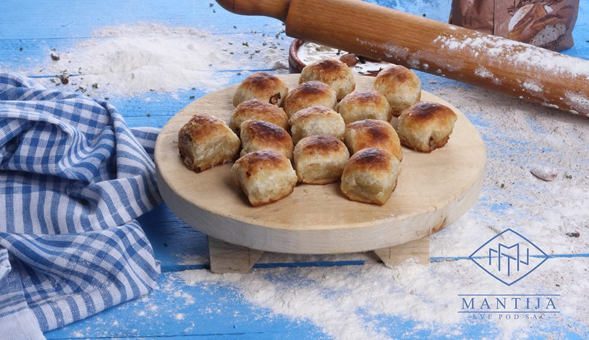
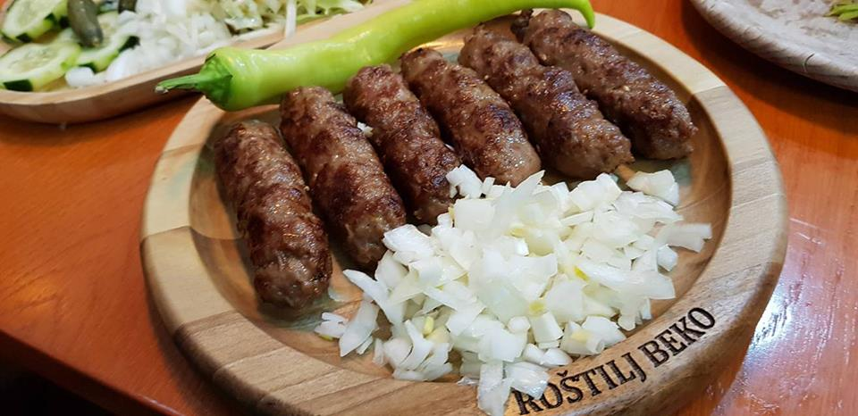

NOVI PAZAR
Možete nas naći na:


Kroz istoriju, Novi Pazar, uprkos činjenici da je jedan od manjih gradova u Evropi, uspeo je da se "umeša" među velikim evropskim gradovima po pitanju trgovine.
Jedan od glavnih razloga toga je teksas, po čemu je Novi Pazar godinama poznat.
Pored toga, Novi Pazar se može pohvaliti raznolikom kuhinjom.
U Evropi su poznati pazarski ćevapi i pazarske mantije.
U Novom Pazaru ima puno mesta gde možete probati ove ukusne specijalitete, ali gde god da odete, sigurno nećete pogrešiti.
Privatni sektor u Novom Pazaru je veoma razvijen.
Najveći resurs Novog Pazara su kreativni ljudi, koji su tokom poslednjih decenija, bez ičije pomoći,
osnovali veliki broj privatnih malih i srednjih preduzeća, čiji je broj preko 6.000.
Preko 500 privatnih preduzeća se bavi proizvodnjom odeće, obuće i nameštaja,
a ostala pretežno uslužnim delatnostima i trgovinom.
Značajnu ulogu imaju i transport robe i putnički saobraćaj sa preko 2.650 firmi za prevoz robe i putnika.
Novi Pazar je trenutno najveći proizvođač džins odeće u Srbiji.
Neke poznate fabrike džinsa u Novom Pazaru
- NESAL
Nesal d.o.o. je osnovan 1987. godine i bavi se proizvodnjom ženske i muške odeće sa posebnim akcentom na jeans odeću. Robna marka NESAL je poznata ne samo na tržištu naše zemlje, već i na tržištima širom Evrope. Kompanija Nesal ima svoja predstavništva u Beogradu, Bosni i Hercegovini, Hrvatskoj, a svoje proizvode izvozimo i u druge države Evrope. Fabrika i sedište kompanije se nalazi u Industrijskoj zoni u Novom Pazaru i smeštena je na površini od 22.200 m² i sa 7.000 m² poslovnog prostora. Mašinski park je sastavljen od najsavremenijih, kompjuterizovanih mašina i automata. U okviru fabrike izgrađena je i kamenjara, koja sa naprednom tehnologijom i najnovijim mašinama može uspešno odgovoriti na sve modne trendove u stone wash procesu. Kamenjara je opremljena filterima za prečišćavanje otpadnih voda i zadovoljava sve svetske standarde za zaštitu prirode.
Nesal Jeans - BROS
Bros JNS brand je domaća robna marka osnovana 1999. god. u Novom Pazaru koja se bavi izradom ženskih i muških odevnih predmeta od džinsa, kepera, pamuka i drugih materijala. Brend Bros JNS ove godine obeležava 15 godina postojanja, uspešnog poslovanja i rada na domaćem i inostranom tržištu. Specifičnost Bros JNS brenda je što ima široku ponudu odevnih predmeta za sve uzraste. Bros JNS brend je tu da omogući našim potrošačima da pronađu svoj lični stil odevanja. Naše ime govori da smo svoji, autentični i originalni. Ciljevi Bros JNS brend su proširenje asortiman prizvoda, povećanje broja maloprodajnih objekata, usavršavanje postojećih i uvođenje novih standarda u poslovanju i proizvodnji. Planirana saradnja sa afirmisanim dizajnerima, davanja prostora mladim ljudima, kao i društveno odgovaoran pristup! Bros JNS čine uspešnim i posebnim, stručni tim mladih i uspešnih modelara i dizajnera, tim za nove izazove.
Bros Jeans - DENISTAR
Preduzeće Denis d.o.o. je osnovano 01.12.1999 godine. Posmatrajući mladalački izgled novih generacija i njihovo lično izražavanje preduzeće 2005. god uvodi robnu marku DENISTAR i nastavlja da nudi širok asortiman. Od 2011. godine u svoj prodajni asortiman uvodi i mušku obuću iste robne marke, a već 2013. godine u proizvodni asortiman ubacuje i liniju lake konfekcije za DENISTAR proizvode od pamuka. Od 2015 god uvodi robnu marku BLUE CODE. Obe robne marke su registrovane na domaćem i međunarodnom tržištu. Proizvodnja se odvija sa mašinskim parkom sastavljenim od najsavremenijih kompjuterizovanih mašina i automata. Sa poslednjim inovacijama u modnim trendovima obrade jeans-a. Fabrika i sedište preduzeća je locirano u Novom Pazaru u ulici Save Kovačevića bb.
Denistar Jeans
Gde pojesti mantije i ćevape?
Kao što smo već rekli, gde god da odete, nećete pogrešiti. Ali, mi ćemo vam predložiti naša dva omiljena mesta.
- Sve pod sač
Firma „Sve pod Sač“ svoj je život započela još krajem osamdesetih godina kao logičan nastavak porodične tradicije zasnovane na iskustvu generacija i na majstorstvu pravljenja tradicionalnih jela – pita i mantija koje su se oduvek smatrale ukrasom naših sofri i trpeza, koje su simbol nekih posebnih, specijalnih, svečanih situacija i porodičnih događaja i okupljanja. Bio je to izazov na zahtev velikog broja ljudi. Sač je bio i ostao znamen posebne pripreme i ukusa svega što se pod sačom peklo. Nikad i nigde se pite i mantije ne zlate tako, ne izazivaju "vodu na usta" kao kad su pod sač pečene. Kroz godine rada firma „Sve pod Sač“ je rasla, rasla je i potreba za njenim proizvodima. U ovom dućanu pita ili mantije nikada ne stoje duže od pet minuta nakon što su pečene. Tek kad jedna tepsija isplovi u rukama potrošača, druga ide pod sač da bi mušterija uvek dobila taze i vreo proizvod. Kolpite sa krompirom, spanaćem, zeljem, sirom, tikvom, prasom, mesom, mešavina krompir i meso ili po narudžbi ravne pite pa kako i šta volite unutra, i mantije obične ili na boščicu.
Sve pod sač
 - Roštilj Beko
Ćevabdžinica Beko je osnovana davne 1985. godine, kao mala ugostiteljska radnja koja se kasnije, usled velike potražnje, proširila. Ova ćevabdžinica je postala jedan od brendova Novog Pazara. "Bekov ćevap" se nadaleko pročuo i postao je poznat i prepoznatljiv, pa se dešava da ljudi kada dođu u naš grad, obavezno svrate na porciju ćevapa.
Roštilj Beko

Vrati na vrh